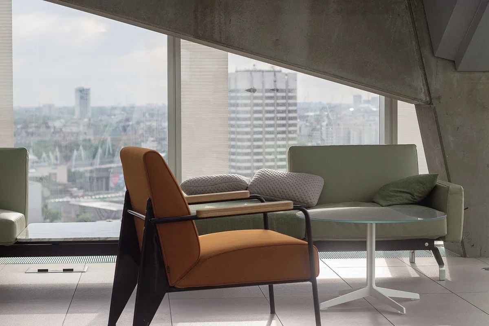

Hemstäd · återkommande besök
Hemstäd varannan vecka — 960,75 kr per tillfälle efter RUT
En lägenhet på 75 m² tar 3,5 timmar. Med besök varannan vecka blir det 2 082 kr per månad efter RUT. Timpriset är 549 kr före avdrag, och du betalar halva priset direkt på fakturan.
Uppdragsprotokoll — hemstäd 75 m²
RUT-avdrag klartProtokollet signeras digitalt efter varje besök och innehåller checklista, tidsstämplar och foton.
Intervall
Välj intervall
Siffrorna nedan gäller en lägenhet på 55 m², där varje städning tar 2,5 timmar. Samma timpris 549 kr före RUT används oavsett hur ofta vi kommer.
Varje vecka
55 m² · 2,5 h per tillfälle
686,25 kr
per tillfälle efter RUT
≈ 2 745 kr per månad efter RUT
Varannan vecka
55 m² · 2,5 h per tillfälle
686,25 kr
per tillfälle efter RUT
≈ 1 486 kr per månad efter RUT
Var fjärde vecka
55 m² · 2,5 h per tillfälle
686,25 kr
per tillfälle efter RUT
≈ 743 kr per månad efter RUT
De flesta kunder väljer varannan vecka. Då håller sig hemmet jämnt städat utan att något behöver tas igen vid nästa besök.
Innehåll
Det här ingår varje gång
Samma checklista används vid varje besök, oavsett vilken av våra städare som kommer hem till dig.
Golv i alla rum, dammsugna och moppade med Svanenmärkt medel.
Kök utvändigt, inklusive spis, spisfläktens filter och köksbänkar.
Badrum och WC, dusch, tvättställ, kakel och klinker.
Dammtorkning i höjd med armarna på alla öppna ytor.
Speglar i hall, badrum och sovrum.
Sängbäddning vid behov, om sängkläder ligger framme.
Sopor och återvinning bärs ut till kärlen på gården.
Byte av handduk, om du lämnar fram en ren handduk till oss.
Ytor i hall, inklusive trösklar och dörrhandtag.
Protokoll efter varje besök, signerat digitalt av dig.
Tillägg du kan beställa samtidigt
Tilläggen faktureras på samma faktura som städningen och ingår i RUT-underlaget när arbetet är avdragsgillt.
Pris per yta
Pris per yta
Tiderna är beräknade på 549 kr per timme för hemstäd. RUT-avdraget är 50 procent av arbetskostnaden, så du betalar hälften av summan i kolumnen till vänster.
| Yta | Tid | Pris före RUT | Efter RUT |
|---|---|---|---|
| 35 m² (1 rum och kök) | 1,5 h | 823,50 kr | 411,75 kr |
| 55 m² (2 rum och kök) | 2,5 h | 1 372,50 kr | 686,25 kr |
| 75 m² (3 rum och kök) | 3,5 h | 1 921,50 kr | 960,75 kr |
| 95 m² (4 rum och kök) | 4,5 h | 2 470,50 kr | 1 235,25 kr |
Dra i tabellen i sidled för att se alla kolumner. På telefon visas varje rad som ett kort med etikett.
Så räknar vi fram tiden
Ytan styr tidsåtgången, inte antalet rum. En lägenhet på 55 m² tar 2,5 timmar och en på 95 m² tar 4,5 timmar. Är hemmet extra möblerat eller har två badrum lägger vi till 30 minuter och säger till innan första besöket, så att priset i offerten stämmer med den tid som faktiskt behövs.
Resultat
Så ser ett hem ut efter besöket
Städningen följer rum för rum, uppifrån och ned. Golvet kommer sist, när allt damm redan ligger i trasan.

Teamet
Samma städare varje gång
22 av 24 anställda har varit hos oss i mer än tre år. Det är därför vi kan lova samma ansikten i ditt hem.
Fast par per kund
Du får ett fast par som lär känna hemmet. Paret har nyckel till porten, vet var parketten är känslig och vilka skåp som inte ska röras.
Vikarie från samma team
Vid semester eller sjukdom skickar vi en vikarie som arbetar i samma team och har läst dina anteckningar. Du får ett sms med namn och tid senast klockan 16 dagen innan.
Nyckelhantering med kvitto
Nycklar lämnas och hämtas mot kvitto. De förvaras i ett låst nyckelskåp på kontoret och kvitteras ut av en namngiven städare varje morgon.
Avvikelser rapporteras
Upptäcker vi en vattenläcka, ett trasigt fönsterlås eller något annat avvikande skriver vi det i protokollet samma dag. Då har du det svart på vitt om något behöver åtgärdas.
Anteckningar för ditt hem
Uppdaterat 12 septemberDu kan ändra anteckningarna när som helst via e-post till vberg024@gmail.com.
Planering
Avbokning och ändringar
Tider flyttas enkelt. Vi tar bara betalt när avbokningen kommer sent samma dag.
| Åtgärd | När | Kostnad |
|---|---|---|
| Avboka ett besök | Senast 24 timmar innan | 0 kr |
| Avboka ett besök | Samma dag | 350 kr |
| Flytta en tid | En gång per kvartal | 0 kr |
Dra i tabellen i sidled för att se alla kolumner. På telefon visas varje rad som ett kort med etikett.
Registrera din RUT-kostnad hos oss
Tillkommande uppgifter som inte rör städningen, som att släppa in hantverkare eller ta emot paket, bokas med 30 minuters framförhållning och debiteras som städtid. Avbokar du samma dag drar vi 350 kr, vilket motsvarar den tid paret redan har avsatt i sin rutt.
RUT-avdrag
RUT-avdraget i praktiken
Avdraget är 50 procent av arbetskostnaden och du behöver inte göra någonting själv. Vi redovisar det hos Skatteverket.
Du får dra av 50 procent av det arbete vi utför, högst 50 000 kr per person och år. Ett hushåll där två vuxna står på fakturan kan alltså använda upp till 100 000 kr sammanlagt. Du betalar halva priset direkt, och resten kvittar vi mot din skatt hos Skatteverket. Inga ansökningar, inga blanketter.
Ett besök på 55 m² kostar 1 372,50 kr före avdrag och du betalar 686,25 kr. Varannan vecka landar månaden på omkring 1 486 kr. Räknar du ihop ett år blir skillnaden cirka 17 800 kr, vilket är vad avdraget sparar dig.
Två villkor gäller. RUT gäller privatpersoner och kan inte användas av företag. Avdraget gäller inte heller för städning av en bostad som du hyr ut i andra hand, oavsett om du äger den. Bor du kvar själv i bostaden går avdraget igenom som vanligt, även om du har inneboende.
Kontorsstäd faktureras exklusive moms och omfattas inte av RUT-avdraget.
Frågor
Frågor vi får varje vecka
Kan jag lämna fram handdukar?
Vad gör jag om jag jobbar hemifrån?
Måste jag vara hemma?
Boka hemstäd varannan vecka och få 960,75 kr per tillfälle efter RUT för en lägenhet på 75 m². Vi svarar inom 2 timmar på vardagar och offerten står sig i 14 dagar.
Skicka bokningsförfrågan